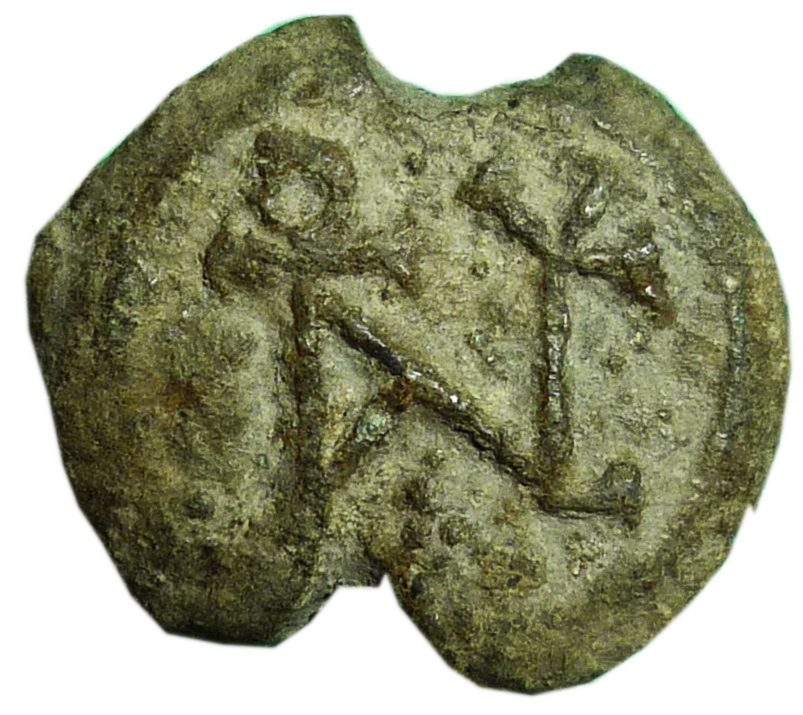

Reconnaître des caractères dans des monogrammes de sceaux byzantins
Un pipeline semi-automatique qui localise puis identifie les lettres grecques enchevêtrées dans les monogrammes, pour constituer une base d'images annotées exploitable par la recherche.
- Période
- Janv. – juin 2026
- Cadre
- Mémoire de M1 · projet ANR BHAI
- Encadrement
- Victoria Eyharabide
- Auteurs
- Mamadou Diouhé Barry, Ezéchiel Sawadogo
- Résultat
- 18/20, major de promotion

Le problème
Les sceaux de plomb byzantins sont une source majeure pour l'histoire de l'Empire : ils identifient leurs propriétaires par des inscriptions, des scènes et des monogrammes. Un monogramme superpose plusieurs lettres en un seul dessin ; le même agencement de traits peut admettre plusieurs lectures. Les déchiffrer demande un expert, alors qu'il existe des dizaines de milliers de sceaux.
L'approche
Séparer les deux difficultés : d'abord localiser chaque caractère dans l'enchevêtrement, ensuite l'identifier. Nous avons annoté le corpus (boîtes polygonales), entraîné les modèles en validation croisée et analysé les confusions classe par classe.
Résultats
- Détection : YOLOv8s, 100 époques, images de 640 px — 351 images, 49 classes, validation croisée à 5 folds.
- Classification : ResNet18 fine-tuné, comparé à un CNN simple et à ViT-Tiny — 2 143 vignettes, 26 classes.
Essayer le modèle
Le détecteur YOLOv8s est accessible en ligne : on dépose le dessin d'un monogramme et il encadre et nomme chaque lettre.
Prolongement : la publication DH2026
Le même corpus a donné lieu à un article présenté à Digital Humanities 2026 (Daejeon, Corée du Sud) : classification de l'état de conservation de 625 sceaux en quatre niveaux (M0–M3) par comparaison d'encodeurs pré-entraînés, DINOv2-Small donnant la meilleure baseline. Voir Publications.
PyTorch · Ultralytics YOLOv8 · torchvision · scikit-learn · Supervisely · Label Studio · Google Colab (GPU T4)